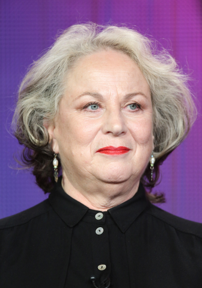

Harry Potter e a Ordem da Fênix
sinópse
Após um verão desastroso, Harry volta para o seu quinto ano em Hogwarts, um dos mais difíceis que terá de encarar. Pouquíssimos alunos e pais acreditam nele ou em Dumbledore sobre a volta de Voldemort, e uma série interminável de artigos circula dizendo que eles estão completamente malucos. Ainda por cima, Dolores Umbridge, a nova professora de Defesa Contra as Artes das Trevas, prova ser a pessoa mais repugnante que Harry já conheceu.
lançamento:2007 - genero:Fantasia/Aventura - 89% gostaram desse filme - esta disponivel agora no HBO MAX
Elenco
Gary Oldman/Sirius Black-----David Thewlis/Remo Lupin-----Pam Ferris/Guida Dursley